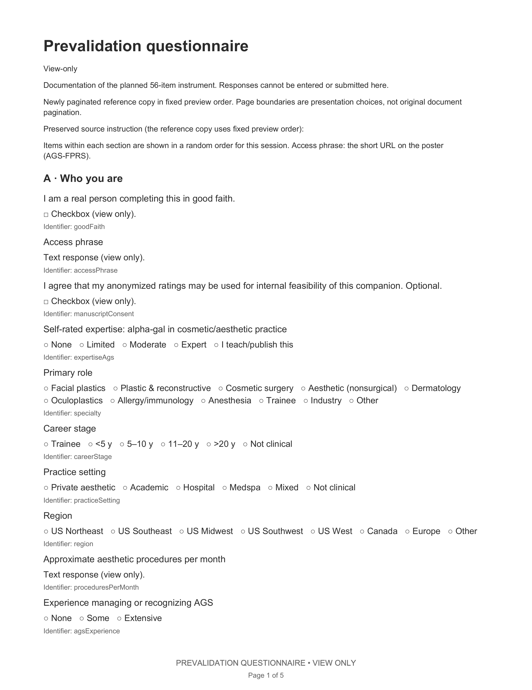

Definition
Alpha-gal syndrome (AGS) is an immunoglobulin E (IgE)-mediated allergy to galactose-α-1,3-galactose (alpha-gal), a carbohydrate epitope expressed in non-primate mammalian tissues.9
v2.0 · Last updated 24 Sep 2026
Alpha-gal syndrome (AGS) is an immunoglobulin E (IgE)-mediated allergy to galactose-α-1,3-galactose (alpha-gal), a carbohydrate epitope expressed in non-primate mammalian tissues.9
A positive alpha-gal-specific IgE result indicates sensitization; diagnosis of AGS requires a compatible clinical history.3,9,10
After ingestion of alpha-gal-containing mammalian products, reactions are typically delayed by 2 to 6 hours and may occur later. Parenteral reactions may be immediate.5,9
Implants can prolong exposure.5,9 A first mammalian product in the suite can be the index reaction.10,3
Hemostats, animal matrices, grafts, sutures, collagen carriers, heparin, hyaluronidase, implants, and some excipients can be mammalian-derived. Check source and the finished formulation.1,3,21,22
SCREEN → STRATIFY → ACT
Tick exposure and endemic residence provide context but do not alone establish an indication for routine testing.
No symptoms or clinical history suggestive of alpha-gal syndrome (AGS). Tick exposure or endemic residence alone remains in this category.
Action
Symptoms and clinical history suggest alpha-gal syndrome (AGS); diagnosis is not yet established.
Action
Compatible history with positive alpha-gal-specific immunoglobulin E (IgE), commonly ≥0.35 kU/L.9,11,30
Action
| ID | Material class | Source / examples | Evidence strength | Clinical action | Notes & rationale |
|---|---|---|---|---|---|
| MAT-GEL | Gelatin hemostats | Bovine / porcine · e.g. GELFOAM, FLOSEAL | Demonstrated | Avoid; use non-gelatin | Class-level perioperative anaphylaxis; not a brand assay.1,5,13,14 |
| MAT-HEP | Porcine unfractionated heparin | Unfractionated heparin (UFH). Porcine mucosa15 | Clinical signal | Substitute if feasible; caution high-dose intravenous (IV) | In Hawkins’ retrospective cardiac-procedure cohort, severe allergic reactions were reported in 4 of 17 patients with positive alpha-gal-specific IgE testing, or 24 percent. Among eight patients with alpha-gal-specific IgE measured within 90 days of surgery, four reacted. These findings do not establish reaction rates for cosmetic procedures.4 |
| MAT-MTX | Mammalian matrices | Porcine / bovine · e.g. Strattice, SurgiMend | Mechanistic inference | Verify source; consider alternative | Adjacent-specialty precedent.3,16,17 |
| MAT-COL | Collagen fillers / catgut | Bovine / porcine collagen · e.g. polymethyl methacrylate (PMMA)-collagen | Theoretical | Verify species/lot; document; prefer synthetic suture | Composition-based only.22,26,18 |
| MAT-HYAL | Testicular hyaluronidase† | Ovine / bovine testis · e.g. Vitrase, Amphadase/Hydase | Theoretical for α-gal only† | Hyaluronidase hypersensitivity is documented. Prior injections and venom sensitization are possible risk factors. Recombinant human hyaluronidase provides an alternative to animal-testicular extracts, while retaining labeled hypersensitivity precautions.33,32 Theoretical does not equal low overall risk | Alpha-gal concern: theoretical. N-glycans have been identified in purified sheep testicular hyaluronidase. This finding alone establishes neither alpha-gal content nor clinical AGS risk.36,38 |
| MAT-HCPL | HA / CaHA / PLLA / lidocaine | hyaluronic acid (HA) / calcium hydroxylapatite (CaHA) / poly-L-lactic acid (PLLA) / lidocaine. Bacterial hyaluronic acid, synthetic, or non-mammalian after source check | No AGS-specific risk identified in the available literature. | Standard use | Other hypersensitivity still possible. Historical avian-derived hyaluronic acid is non-mammalian; verify source. Absence of AGS-specific literature does not equal proven safe.2,6,26,27 |
| MAT-BTX | Botulinum toxin | Stabilizers vary by formulation. Verify instructions for use | Theoretical for gelatin-containing formulations | Verify formulation; prefer a source-verified non-gelatin alternative if gelatin is present. | Stabilizers vary by formulation. Some preparations contain gelatin; others contain human serum albumin or different excipients. Verify the specific product’s current labeling. Published descriptions of lanbotulinumtoxinA, marketed under names including Hengli and Lantox, identify bovine gelatin as its stabilizer.39,40 Absence of AGS-specific literature does not equal proven safe.26 |
A positive alpha-gal-specific IgE result indicates sensitization; diagnosis of AGS requires a compatible clinical history.9,3
Some sensitized patients tolerate mammalian-derived products.3,25,29,24
Delayed filler or matrix reactions alone do not establish AGS.
A positive alpha-gal-specific IgE result indicates sensitization; diagnosis of AGS requires a compatible clinical history.2,6-8
Hyaluronidase hypersensitivity is documented.33
Prior injections and venom sensitization are possible risk factors.33
Recombinant human hyaluronidase provides an alternative to animal-testicular extracts, while retaining labeled hypersensitivity precautions.33,32
The HYLENEX prescribing information distinguishes allergic reactions from anaphylactic-like reactions.32
Theoretical concern only.
N-glycans have been identified in purified sheep testicular hyaluronidase. This finding alone establishes neither alpha-gal content nor clinical AGS risk.36,38
In confirmed AGS, a reaction still cannot be assumed to be α-gal-mediated.
Theoretical α-gal evidence is not a statement about overall hyaluronidase risk.
The established pathway is tick-induced alpha-gal-specific immunoglobulin E (IgE) reacting to a later mammalian exposure.
A hypothesized product-associated sensitization pathway remains unestablished.
Lone-star tick (Amblyomma americanum) priming is directed at the oligosaccharide, so conventional meat IgE may be negative while gelatin, collagen, heparin, and some excipients still react.1,9
Solid border: human clinical evidence. Dashed border: hypothesis.
Pre-existing α-gal sensitization · human clinical evidence1,3-5
A hypothesized product-associated sensitization pathway remains unestablished3
Educational material; not certified for continuing medical education (CME) credit. Clinical tiers and recommendations attach to generic material class, not to an individual brand.
This resource was created by and is the sole responsibility of Marielle He.
AAFPRS and study co-authors and their respective institutions were not involved in app development and are not responsible for its content or correspondence.
American Academy of Facial Plastic and Reconstructive Surgery (AAFPRS).
1 CENTER for Advanced Facial Plastic Surgery, Beverly Hills, CA
2 Division of Otolaryngology-Head and Neck Surgery, Cedars-Sinai Medical Center, Los Angeles, CA
Poster: AAFPRS Annual Meeting, Las Vegas, 2026.
Trade names appear only as illustrations of a class. Where a class is named, examples from more than one manufacturer are listed when more than one marketed product exists. Inclusion is not an endorsement; exclusion is not a judgment against a product. Brand-level α-gal content was not assayed.
Manufacturers reformulate products, change source species or excipients, and enter or leave the market. Named examples (e.g., gelatin hemostats such as GELFOAM and FLOSEAL; matrices such as Strattice and SurgiMend; testicular hyaluronidase such as Vitrase and Amphadase/Hydase versus recombinant Hylenex) reflect composition understood as of August 2026 and may be outdated. Before use, confirm the current species/source, excipients, and lot against the product’s current U.S. Food and Drug Administration (FDA)-approved label or Instructions for Use.
Marielle He, MD, MS; Jordan Kai Simmons, MD; and Babak Azizzadeh, MD, FACS report no relevant financial relationships with the manufacturers of any product named in this companion within the past 24 months.
None. No manufacturer provided funding, product, or input into content.
Version v2.0. This document is reviewed at least every 12 months and whenever a named product is reformulated, recalled, withdrawn, or relabeled; the affected row is updated in a focused revision. Next scheduled review: 2027-08-28. Owner: Marielle He, MD, MS, CENTER for Advanced Facial Plastic Surgery.
A decision aid. It does not replace approved product labeling, institutional policy, or individualized clinical judgment and allergy/immunology consultation where indicated. Not FDA-evaluated. Not peer-reviewed.
Author narration only.
Poster narration is not a complete accessible equivalent of the submitted poster.
Final author recording · 5 min 30 sec.
Use the written companion for current clinical guidance.
Final author recording · 4 min 57 sec.
Name and email are optional. Please omit patient information.
Feedback submission is not yet available. Entries are not saved.
Documentation of the planned 56-item instrument. Responses cannot be entered or submitted here.
Read the questionnaire as accessible text
Newly paginated reference copy in fixed preview order. View questionnaire PDF
Page 1 of 5

Print the complete questionnaire from the accessible text or PDF linked above.
None.
Poster selected references 1-12 match this companion. Poster 13 is product labeling (companion 13-18). Poster 14-16 (Yang, Guliyeva, HYLENEX) are companion 36, 33, and 32. 20-30 are content-evidence expansions. 31 and 34 remain additional hyaluronidase source records. Lee (38) supports alpha-gal identification methodology; Bigalke (39) and Dressler (40) address botulinum-toxin preparations and stabilizers. Product names illustrate composition as of August 2026; re-verify current instructions for use.
{kind=link}